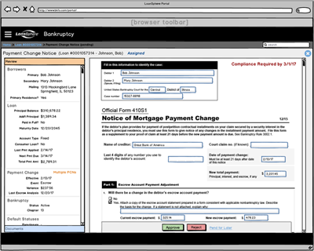

Case Study: Bankruptcy PCN
TL;DR
I led the UX design for the Bankruptcy Payment Change Notification (PCN) project, the second application built on our new Single-Page Architecture. Working closely with product managers and SMEs, my work helped ship the application under tight constraints, improve usability and efficiency for servicers, and build trust in UX processes. This project, built specifically for Wells Fargo, marked the first full adoption of the HTML/CSS-based Atomic Design System I helped build and helped establish the application as part of Black Knight's core product suite.The Challenge:
Designing a Brand-New Application with High Stakes
Context:
- Bankruptcy regulations required servicers to notify courts and borrowers of loan payment changes.
- This process was previously handled manually or with outdated tools, increasing risk of noncompliance.
- PCN was the first UI designed for the new Bankruptcy module, requiring a full front-end from scratch.
Constraints:
- Had only 1 week on-site with SMEs to design the first set of screens.
- No direct user interviews were permitted at first due to a product culture where PMs owned user communication. I had to build trust, demonstrate value, and gradually shift this mindset.
- Complex workflows and terminology unfamiliar to most team members.
My Role & Responsibilities
I was the sole UX Designer assigned to the PCN project and collaborated closely with product managers, BAs, and developers. This project became a turning point in demonstrating UX's value in the division.
-
Rapid UX Discovery
- Collaborated closely with SMEs and PMs during an on-site design sprint in Jacksonville, FL.
- Built instant credibility by quickly mapping real workflows and terminology.
-
Design & Prototyping
- Created wireframes in Balsamiq to rapidly explore concepts and validate flows.
- Presented designs early and often to PMs, devs, and SMEs to gather feedback.
- Refined UI patterns based on mental models and data flow, especially around key timelines and filing requirements.
Early wireframe created in Balsamiq to align team on PCN workflow design.
 -
Developer Collaboration
- Provided CSS code and guidance for implementing UI behavior, including form validation and data visibility logic.
- Held regular check-ins with front-end engineers to ensure high-fidelity implementation matched the design intent.
-
Design Fix: From Developer Build to Final Implementation
After the initial build, I stepped in to refine the layout and styling. The development team had implemented core functionality, but the UI lacked proper spacing, visual hierarchy, and alignment. I updated the CSS and markup to improve usability and match the design system's standards.

Developer Build
- ❌ Cramped layout with poor spacing
- ❌ Inconsistent alignment and visual grouping
- ❌ Cluttered status indicators and headers

Final UI After My Code Fix
- ✅ Improved visual hierarchy using spacing and alignment
- ✅ Tab and grid areas visually separated
- ✅ Simplified and readable status section
-
Building Trust in UX
- Overcame cultural resistance to UX by showing how research and design improved outcomes.
- Won support from influential product leaders who later championed UX on future projects.
- Although we couldn't speak directly to external users, I validated flows with internal SMEs who had domain knowledge from daily customer interactions.
{kind=link}
The Solution:
A Focused UI for Complex Regulatory Workflows
- Task-Oriented Design: Each screen aligned to real-world workflows for payment change tracking and legal filing.
- Scalable Design: Used modular components from the design system to streamline development.
- Workflow Clarity: Grouped related data fields and used progressive disclosure to manage complexity.
- Regulatory Confidence: UI design aligned with legal constraints, ensuring critical data was surfaced properly.
The Impact:
Design System Adoption & Business Success
- ✅ First full implementation of our modern HTML/CSS-based Atomic Design System.
- ✅ Improved usability despite lack of direct user access.
- ✅ Positive feedback from SMEs and stakeholders on clarity and ease of use.
- ✅ Accelerated dev time due to pre-defined patterns and components.
- ✅ Contributed to enterprise growth: PCN became part of Black Knight's core offerings and helped expand adoption of UX practices across projects like the Atomic Design System. influencing future collaboration models.
“Roberto led the teams through a very agile design process and was critical to getting the PCN product delivered on a very short timeline.” — Performance Review, 2017
Lessons Learned & Takeaways
- Constraints inspire focus: Time pressure and access limitations pushed me to rely on strong patterns and rapid feedback loops.
- Design systems pay off: Having a library of tested components enabled faster delivery with fewer mistakes.
- Embedded UX = speed + trust: Being in the room, asking the right questions, and rapidly iterating with devs/PMs built trust and delivered results.
- Culture change is possible: This project helped open the door for greater UX collaboration across future projects, including Atomic Design System workstreams.
This project shifted PM mindsets from "we don't need UX" to "let's involve UX early." That shift increased UX buy-in across the org.
Want to Dive Deeper?
This case study offers a summary of my UX design work on PCN. For more visuals and details, download the full PDF version:
- Download Full Case Study (PDF, 282KB)
See also: